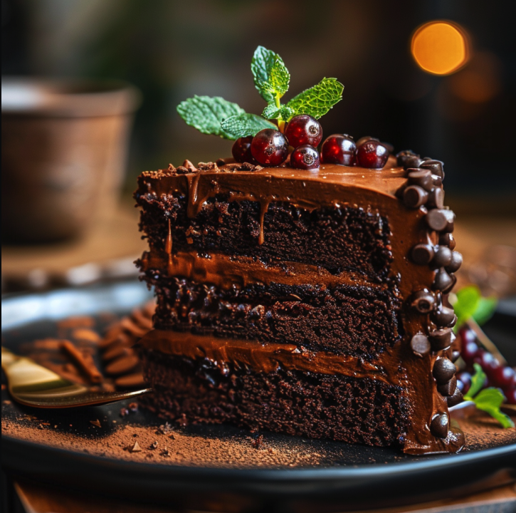

Gin & Chronic Chocolate Cake

This cake is as smooth and intoxicating as Snoop Dogg's flow. The gin adds a unique twist, creating a rich, moist chocolate cake that's straight-up chronic.
Ingredients
- 1 cup all-purpose flour
- 1 cup sugar
- 1/2 cup cocoa powder
- 1 teaspoon baking soda
- 1/2 teaspoon salt
- 1/4 cup gin
- 3/4 cup water
- 1/4 cup vegetable oil
- 1 teaspoon vanilla extract
- 1 tablespoon vinegar
Directions
- Preheat your oven to 350°F (175°C).
- In a bowl, mix flour, sugar, cocoa powder, baking soda, and salt.
- Add gin, water, oil, vanilla, and vinegar. Mix until smooth.
- Pour batter into a greased 9-inch cake pan.
- Bake for 30-35 minutes or until a toothpick inserted into the center comes out clean.
- Let cool before serving.